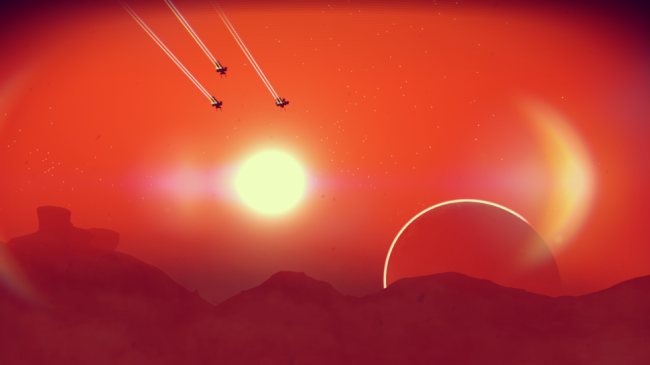

News
No Man's Sky developer finally breaks silence to announce base-building update
Hello Games says "Foundation update" will pave the way other future features, and addresses its own lack of communication.
After literally months of silence, No Man's Sky developer Hello Games has announced that something called the "Foundation update" is just about ready for release. The update is so named because it will add "the foundations of base building," the studio said, "and also because this is putting in place a foundation for things to come." "Coming from five years of intense development, immediately after No Man’s Sky released the team spent six weeks updating the game with 7 patches across both platforms (the last of these was 1.09 on Sept 24th which you can read about them all here http://www.no-mans-sky.com/log/). These fixed many of the most common or critical bugs and issues post-release," Hello Games wrote. "In the nine weeks since then our small team has been hard at work on development, testing and certification for the Foundation Update. It won’t be our biggest update, but it is the start of something." The studio also copped to being "quiet" since the game came out, but said that it is paying attention to the "intense and dramatic" discussions about No Man's Sky, and is continuing to work to improve the game. "Positive or negative feedback, you have been heard and that will truly help to make this a better game for everyone," it wrote. "This update will be the first small step in a longer journey. We hope you can join us." It's great that the wheels are still turning, but is base building really what NMS players are hankering for? It seems a bit mundane to me. I want to explore a vast and strange galaxy, unlock its secrets, and ascend to godhood—or, you know, at least see some cool stuff along the way. Why would I want to build a base when I could be out cruising the stars? Hello Games said detailed patch notes, and the update itself, will both be released soon. In case you'd forgotten, today is Black Friday, and we have ongoing roundups of all the best deals: PC game sales here, and gaming hardware bargains here. Some online stores give us a small cut if you buy something through one of our links. Read our affiliate policy for more info.